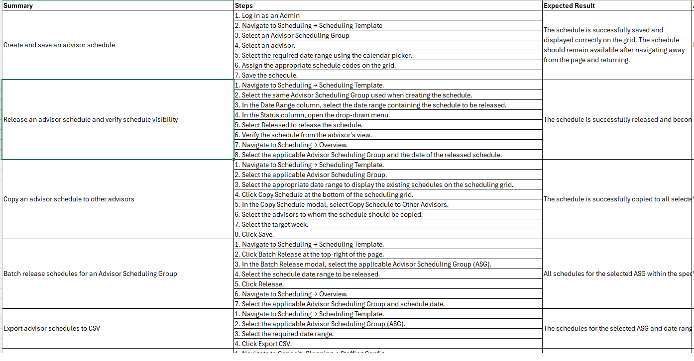

A fictional UAT case study demonstrating how I approach testing from the perspective of the end user, business process, and complete workflow rather than focusing only on individual test cases.
The objective of this UAT exercise was to validate whether an employee request workflow worked correctly from the user's perspective and supported the expected business process.
Allow employees to submit a request, allow the appropriate approver to review it, and provide clear status visibility throughout the process.
Confirm that the complete workflow is usable, understandable, and aligned with the expected business outcome.
Instead of testing each screen independently, the scenario follows a realistic user journey from request creation through final status confirmation.
The employee signs in using a valid account and navigates to the request portal.
The employee selects the appropriate request type and provides the required information.
The employee submits the request and verifies that the system provides a confirmation.
The designated approver opens the request, reviews the information, and makes a decision.
The employee returns to the portal and verifies that the request status reflects the approver's decision.
The following examples show how the user journey can be translated into business-focused validation points.
| Step | Validation | Expected Result |
|---|---|---|
| Login | User accesses the request portal. | Dashboard loads successfully. |
| Create | User enters all required information. | Request can be created without validation errors. |
| Submit | User submits the request. | Confirmation is displayed and request receives an identifier. |
| Approval | Approver reviews the request. | Approver can approve or reject the request. |
| Status | Employee reviews the request afterward. | Status reflects the latest business decision. |
Sample UAT documentation demonstrating how a complete user journey can be translated into structured validation steps and expected business outcomes.

UAT is not simply about checking whether individual test cases pass. The bigger question is whether the product allows the user to successfully complete the business task it was designed to support.
My approach is to connect individual validations into a complete user journey, while also considering usability, business rules, status transitions, notifications, data visibility, and the expected outcome for the user.
Understanding the business outcome behind a requirement instead of testing only the interface.
Validating the product using realistic workflows and user goals.
Connecting multiple system interactions into a complete workflow.
Confirming that the delivered functionality satisfies the expected business behavior.
This is a fictional portfolio example created to demonstrate UAT methodology and user-focused testing. It does not contain confidential, proprietary, customer, or company information.